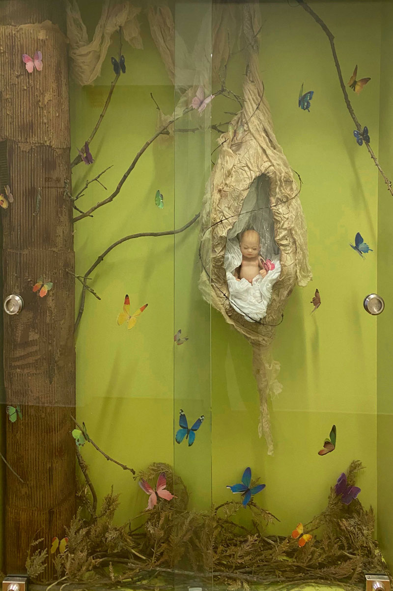
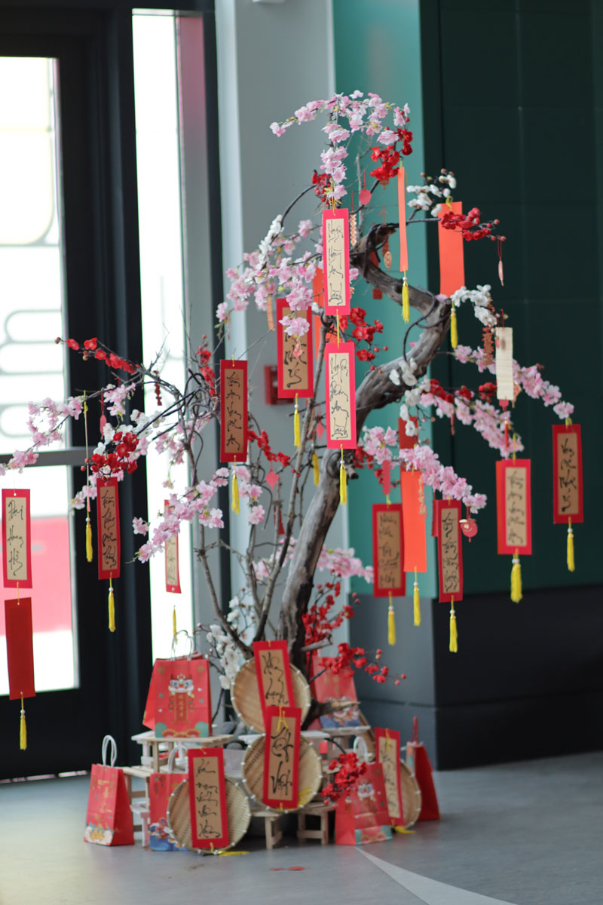
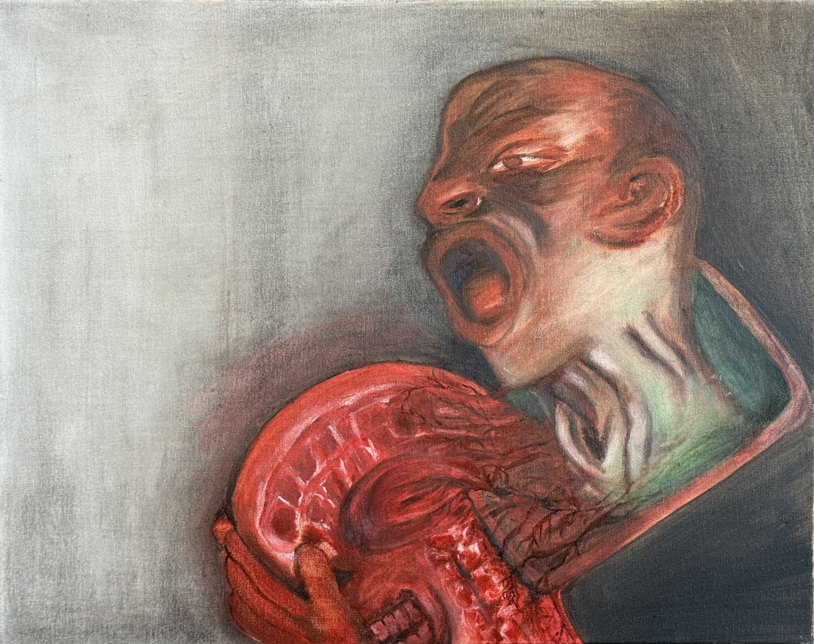
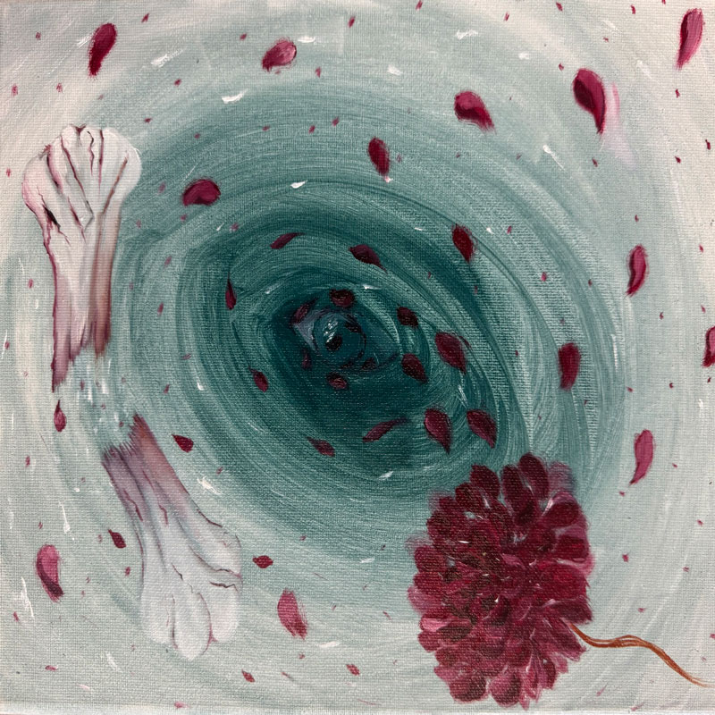

About Me
An Luong is a Vietnamese artist and digital media art student based in San Jose, California.
Originally from Vietnam, she brings her cultural background and personal experiences into her
creative practice. Her work explores identity, memory, tradition, and the connection between
Vietnamese culture and contemporary visual art.
An works across digital media, installation, sculpture, photography, and event design. She is
especially interested in creating meaningful visual experiences that combine storytelling, cultural
symbolism, and community connection. Alongside her studio practice, she works as an event designer
specializing in floral arrangements, Vietnamese wedding tea ceremonies, and gia tiên decorations.
My Work

A Baby Cocoon
Mixed media installation about fragility, protection, and transformation.

Moon Lotus
Lacquer-inspired resin art, mixed media, 2025

Lucky Tree
Cultural installation, artificial flowers, branches, red envelopes, Vietnamese New Year decorations

The Slave of Sin
oil, and acrylic on canvas

A Spiral Eye
oil, and acrylic on canvas

Home-cooked Meal-Cơm Nhà
Lacquer-inspired resin art, mixed media
Contact Me
Email:an.t.luong@sjsu.edu